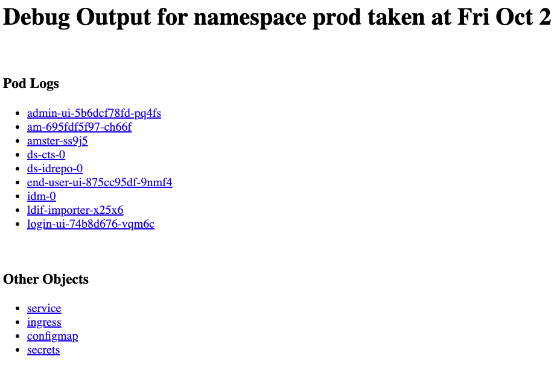

CDK Troubleshooting
Kubernetes deployments are multi-layered and often complex.
Errors and misconfigurations can crop up in a variety of places. Performing a logical, systematic search for the source of a problem can be daunting.
This section contains some troubleshooting categories you can explore, to reolve an issue.
Third-Party Software Versions
ForgeRock recommends installing tested versions of third-party software in environments where you’ll run the CDK.
See the tested versions of third-party software in your corresponding environment:
If you used Homebrew to install third-party software, you can use the following commands to obtain software versions:
-
Homebrew:
brew list --versions -
Homebrew casks:
brew list --cask --versions
Minikube VM Configuration (Minikube deployments only)
The minikube start command example in
Minikube Virtual Machine
specifies the virtual hardware requirements for a Minikube VM.
Run the VBoxManage showvminfo "minikube" command to verify that
your Minikube VM meets the stated memory requirement (Memory Size in the
output), and to gather other information that might be of interest when
troubleshooting issues running the CDK in a Minikube environment.
Sufficient Disk Space (Minikube deployments only)
When the Minikube VM runs low on disk space, it acts unpredictably. Unexpected application errors can appear.
Verify that adequate disk space is available by logging in to the Minikube VM and running a command to display free disk space:
$ minikube ssh $ df -h Filesystem Size Used Avail Use% Mounted on devtmpfs 3.9G 0 3.9G 0% /dev tmpfs 3.9G 0 3.9G 0% /dev/shm tmpfs 3.9G 383M 3.6G 10% /run tmpfs 3.9G 0 3.9G 0% /sys/fs/cgroup tmpfs 3.9G 64K 3.9G 1% /tmp /dev/sda1 25G 7.7G 16G 33% /mnt/sda1 /Users 465G 219G 247G 48% /Users $ exit logout
In the preceding example, 16 GB of disk space is available on the Minikube VM.
kubectl Shell Autocompletion
The kubectl shell autocompletion extension lets you extend the Tab key
completion feature of Bash and Zsh shells to the kubectl commands.
While not a troubleshooting tool, this extension can make troubleshooting easier,
because it lets you enter kubectl commands more easily.
For more information about the Kubernetes autocompletion extension, see Enabling shell autocompletion in the Kubernetes documentation.
Note that to install the autocompletion extension in Bash, you must be running
version 4 or later of the Bash shell. To determine your bash shell version, run
the bash --version command.
Expanded Kustomize Output
If you’ve modified any of the Kustomize bases and overlays that come with the
CDK, you might want to see how your changes affect CDK deployment.
Use the kustomize build command to see how Kustomize expands
your bases and overlays into YAML files.
For example:
$ cd /path/to/forgeops/kustomize/overlay/7.0
$ kustomize build all
2020/10/02 11:07:53 well-defined vars that were never replaced: DOMAIN,DSBACKUP_DIRECTORY,DSBACKUP_HOSTS,NAMESPACE,SUBDOMAIN,AUTORESTORE_FROM_DSBACKUP
apiVersion: v1
data:
IDM_ENVCONFIG_DIRS: /opt/openidm/resolver
LOGGING_PROPERTIES: /var/run/openidm/logging/logging.properties
OPENIDM_ANONYMOUS_PASSWORD: anonymous
OPENIDM_CLUSTER_REMOVE_OFFLINE_NODE_STATE: "true"
OPENIDM_CONFIG_REPO_ENABLED: "false"
PROJECT_HOME: /opt/openidm
kind: ConfigMap
metadata:
labels:
app: idm
app.kubernetes.io/name: forgerock
component: idm
tier: middle
vendor: forgerock
name: idm
namespace: prod
---
apiVersion: v1
data:
logging.properties: |
# Properties file that configures the operation of the JDK
# logging facility.
# The system will look for this configuration file, first using
# a System property specified at startup:
#
# >java -Djava.util.logging.config.file=myLoggingConfigFilePath
#
. . .
Skaffold Issues
Skaffold provides different levels of debug logging information. When you encounter issues deploying the platform with Skaffold, you can set the logging verbosity to display more messages. The additional messages might help you identify problems.
For example:
$ cd /path/to/forgeops
$ skaffold dev -v debug
INFO[0000] starting gRPC server on port 50051
INFO[0000] starting gRPC HTTP server on port 50052
INFO[0000] Skaffold &{Version:v0.38.0 ConfigVersion:skaffold/v1beta14 GitVersion: GitCommit:1012d7339d0055ab93d7f88e95b7a89292ce77f6 GitTreeState:clean BuildDate:2020-09-13T02:16:09Z GoVersion:go1.13 Compiler:gc Platform:darwin/amd64}
DEBU[0000] config version (skaffold/v1beta12) out of date: upgrading to latest (skaffold/v1beta14)
DEBU[0000] found config for context "minikube"
DEBU[0000] Defaulting build type to local build
DEBU[0000] validating yamltags of struct SkaffoldConfig
DEBU[0000] validating yamltags of struct Metadata
. . .
Pod Descriptions and Container Logs
Look at pod descriptions and container log files for irregularities that indicate problems.
Pod descriptions contain information about active Kubernetes pods, including their configuration, status, containers (including containers that have finished running), volume mounts, and pod-related events.
Container logs contain startup and run-time messages that might indicate
problem areas. Each Kubernetes container has its own log that contains all
output written to stdout by the application running in the container. The am
container logs are especially important for troubleshooting AM issues in
Kubernetes deployments. AM writes its debug logs to stdout.
Therefore, the am container logs include all the AM debug logs.
Here’s an example of how you can use pod descriptions and container logs to troubleshoot. Events in the pod description indicate that Kubernetes was unsuccessful in pulling a Docker image required to run a container. You can review your Docker registry’s configuration to determine whether a misconfiguration caused the problem.
The debug-logs.sh script generates the following HTML-formatted
output, which you can view in a browser:
-
Descriptions of all the Kubernetes pods running the ForgeRock Identity Platform in your namespace
-
Logs for all of the containers running in these pods
Perform the following procedure to run the debug-logs.sh script
and then view the output in a browser:
-
Make sure that your namespace is the current namespace in your Kubernetes context.
-
Make sure you’ve checked out the master branch of the
forgeopsrepository. -
Change to the
/path/to/forgeops/bindirectory in yourforgeopsrepository clone. -
Run the
debug-logs.shscript:$ ./debug-logs.sh Generating debug log for namespace prod Generating admin-ui-5b6dcf78fd-pq4fs logs Generating am-695fdf5f97-ch66f logs Generating amster-ss9j5 logs Generating ds-cts-0 logs Generating ds-idrepo-0 logs Generating end-user-ui-875cc95df-9nmf4 logs Generating idm-0 logs Generating ldif-importer-x25x6 logs Generating login-ui-74b8d676-vqm6c logs open file:///tmp/forgeops/log.html in your browser
-
In a browser, go to the URL shown in the
debug-logs.shoutput. For example,file:///tmp/forgeops/log.html. The browser displays a screen with a link for each ForgeRock Identity Platform pod in your namespace: -
(Optional) To access the information for a pod, select its link from the start of the
debug-logs.shoutput.Selecting the link takes you to the pod’s description. Logs for each of the pod’s containers follow the pod’s description.
-
(Optional) To modify the output to contain the latest updates to the pod descriptions and container logs, run the
debug-logs.shscript again, and then refresh your browser.